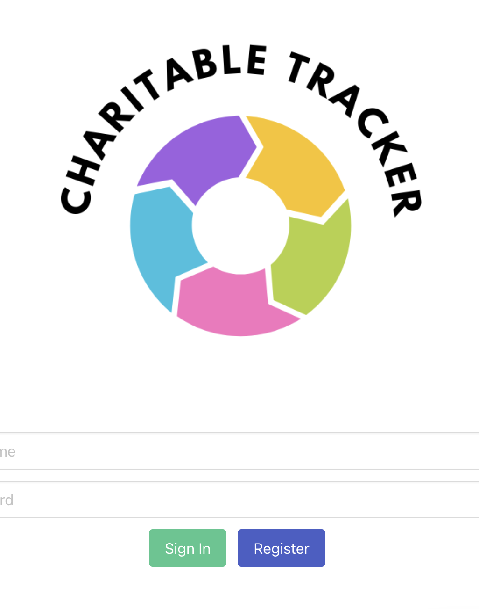

A Way to Track your Charitable Donations
An app to creatively track volunteer hours and charitable donations in engaging and helpful ways and provide you with useful and encouraging reports to show you the impact you're making with the organizations and causes you value most! Take me to the GitHub Repo.